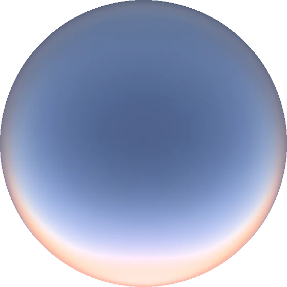
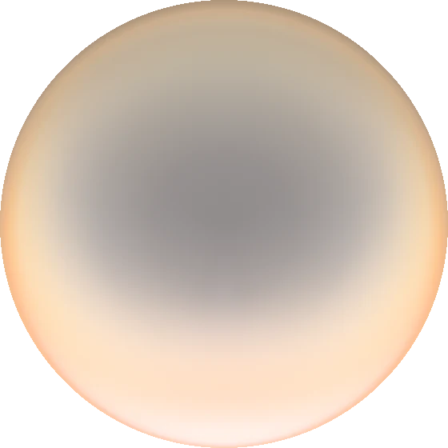
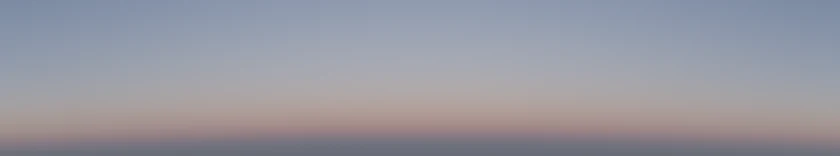
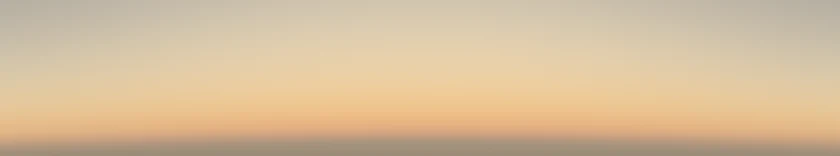

{{LEDE}}
{{INTRO}}Take the ozone away
{{TAKE_AWAY}}

With ozone (300 DU)

Without ozone
{{BELT}}

With ozone: the Earth's shadow and the Belt of Venus

Without ozone
A cyanometer for one evening
{{CYAN_INTRO}}
Sunbeams that come out blue
{{RAYS_INTRO}}
{{RAYS_AFTER}}
The bite out of the orange
{{BITE_INTRO}}
How much of the zenith's light survives the ozone, by wavelength
Two-thirds at sunset, then most of it
{{SHARE_INTRO}}
Ozone's share of the zenith's blueness
{{SHARE_AFTER}}
Dimmer, and mostly second-hand
{{DIM_INTRO}}
Brightness of the zenith
Share of zenith light scattered more than once
Today's ozone; the other cases differ by a few points
{{DIM_AFTER}}
Show the numbers behind the charts
Over the ozone hole
{{HOLE}}
{{HOLE_AFTER}}
How I built it
{{BUILT}}
| Check | Model | Reference |
|---|
What I'm unsure of
{{UNSURE}}